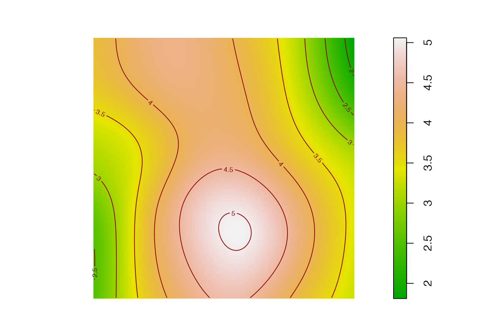

A spatial accumulation is a measure of diversity with respect to the distance from individuals.
Usage
# S3 method for class 'accum_sp'
plot(
x,
...,
q = dimnames(x$accumulation)$q[1],
type = "l",
main = "accumulation of ...",
xlab = "Sample size...",
ylab = "Diversity...",
ylim = NULL,
show_h0 = TRUE,
line_width = 2,
col_shade = "grey75",
col_border = "red"
)
# S3 method for class 'accum_sp'
autoplot(
object,
...,
q = dimnames(object$accumulation)$q[1],
main = "Accumulation of ...",
xlab = "Sample size...",
ylab = "Diversity...",
ylim = NULL,
show_h0 = TRUE,
col_shade = "grey75",
col_border = "red"
)
plot_map(
accum,
q = as.numeric(dimnames(accum$accumulation)$q[1]),
neighborhood = as.numeric(dplyr::last(colnames(accum$neighborhoods))),
sigma = spatstat.explore::bw.scott(accum$X, isotropic = TRUE),
allow_jitter = TRUE,
weighted = FALSE,
adjust = 1,
dim_x = 128,
dim_y = 128,
main = "",
col = grDevices::terrain.colors(256),
contour = TRUE,
contour_levels = 10,
contour_col = "dark red",
points = FALSE,
pch = 20,
point_col = "black",
suppress_margins = TRUE,
...,
check_arguments = TRUE
)Arguments
- x
an
accum_spobject.- ...
Additional arguments to be passed to plot, or, in
plot_map(), to spatstat.explore::bw.smoothppp and spatstat.explore::density.ppp to control the kernel smoothing and to spatstat.geom::plot.im to plot the image.- q
a number: the order of diversity.
- type
plotting parameter. Default is "l".
- main
main title of the plot.
- xlab
X-axis label.
- ylab
Y-axis label.
- ylim
limits of the Y-axis, as a vector of two numeric values.
- show_h0
if
TRUE, the values of the null hypothesis are plotted.- line_width
width of the Diversity Accumulation Curve line.
- col_shade
The color of the shaded confidence envelope.
- col_border
The color of the borders of the confidence envelope.
- object
an
accum_spobject.- accum
an object to map.
- neighborhood
The neighborhood size, i.e. the number of neighbors or the distance to consider.
- sigma
the smoothing bandwidth. The standard deviation of the isotropic smoothing kernel. Either a numerical value, or a function that computes an appropriate value of sigma.
- allow_jitter
if
TRUE, duplicated points are jittered to avoid their elimination by the smoothing procedure.- weighted
if
TRUE, the weight of the points is used by the smoothing procedure.- adjust
force the automatically selected bandwidth to be multiplied by
adjust. Setting it to values lower than one (1/2 for example) will sharpen the estimation.- dim_x
the number of columns (pixels) of the resulting map, 128 by default.
- dim_y
the number of rows (pixels) of the resulting map, 128 by default.
- col
the colors of the map. See spatstat.geom::plot.im for details.
- contour
if
TRUE, contours are added to the map.- contour_levels
the number of levels of contours.
- contour_col
the color of the contour lines.
- points
if
TRUE, the points that brought the data are added to the map.- pch
the symbol used to represent points.
- point_col
the color of the points. Standard base graphic arguments such as
maincan be used.- suppress_margins
if
TRUE, the map has reduced margins.- check_arguments
if
TRUE, the function arguments are verified. Should be set toFALSEto save time when the arguments have been checked elsewhere.
Value
plot.accum_sp() returns NULL.
autoplot.accum_sp() returns a ggplot2::ggplot object.
plot_map returns a spatstat.geom::im object that can be used to produce
alternative maps.
Details
Objects of class accum_sp contain the value of diversity
(accum_sp_diversity objects), entropy (accum_sp_entropy objects) or
mixing (accum_sp_mixing objects) at distances from the individuals.
These objects are lists:
Xcontains the dbmss::wmppp point pattern,accumulationis a 3-dimensional array, with orders of diversity in rows, neighborhood size (number of points or distance) in columns and a single slice for the observed entropy, diversity or mixing.neighborhoodsis a similar 3-dimensional array with one slice per point ofX.
They can be plotted or mapped.
Examples
# Generate a random community
X <- rspcommunity(1, size = 50, species_number = 10)
# Calculate the species accumulation curve
accum <- accum_sp_hill(X, orders = 0, r = c(0, 0.2), individual = TRUE)
# Plot the local richness at distance = 0.2
plot_map(accum, q = 0, neighborhood = 0.2)
